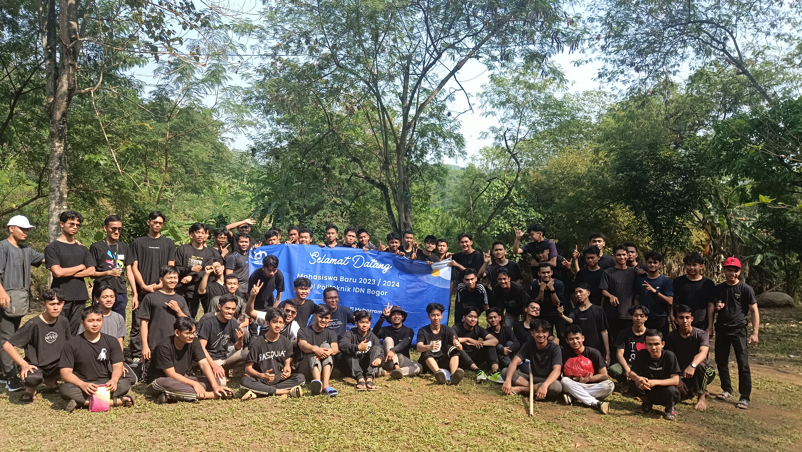
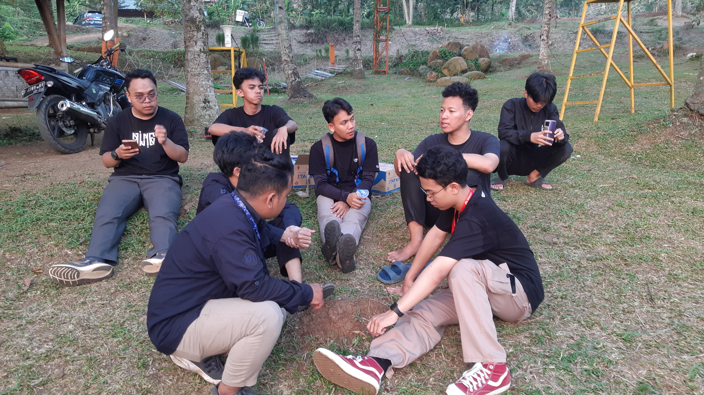
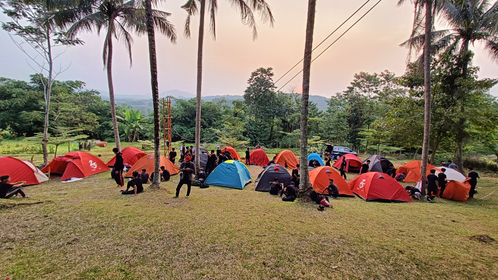
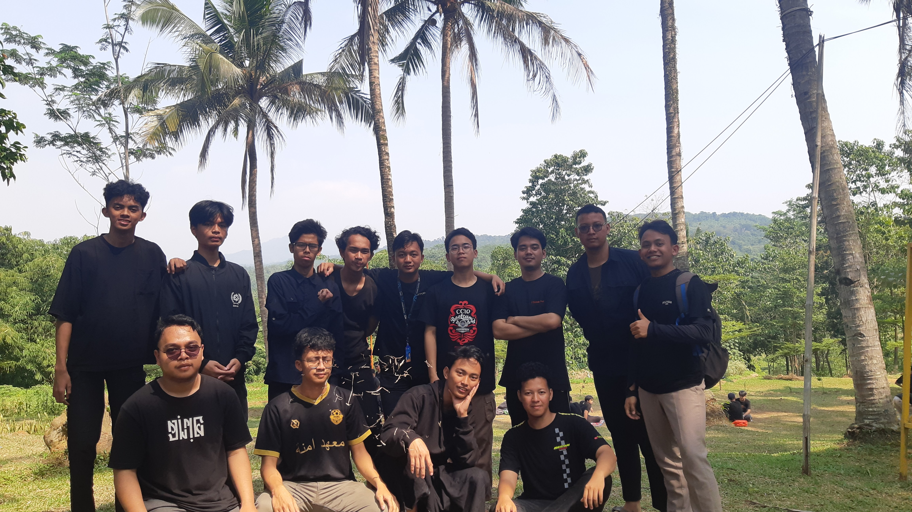

OSPEK IDN 2023

Hello, Maba
Instagram.com/zangunwn
Active recently




OSPEK (Orientasi Studi dan Pengenalan Kampus) adalah kegiatan pengenalan yang diadakan oleh oleh perguruan tinggi atau sekolah tinggi bagi mahasiswa baru. Kegiatan ini bertujuan untuk mengenalkan mahasiswa baru dengan lingkungan kampus, norma-norma akademik, kegiatan kampus serta membantu mereka beradaptasi dengan kehidupan perkuliahan dan mahasiswa.